PPT · 第 5 页
展示用学习曲线

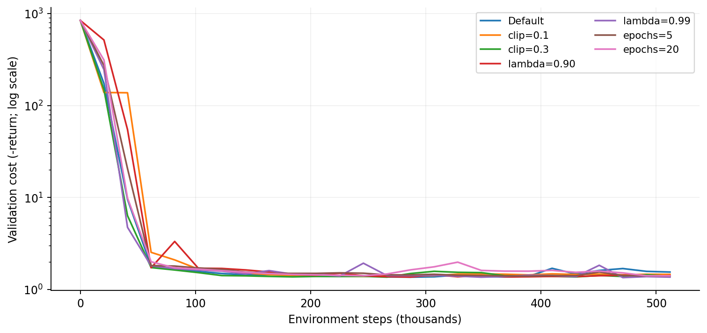
七个配置的平均验证代价，纵轴为对数；越低越好。
slides_learning11 组图，每组提供 PNG 与矢量 PDF。点击图片可查看原尺寸，使用“PNG 图片”链接选择插入 PPT 的文件。 优先使用标题标为 PPT 的图；其余图可作为补充。
误差条与阴影为三个训练种子的样本标准差。回报越高越好；“展示用学习曲线”绘制负回报，越低越好。 电量按七天回合统计。完整使用说明见 README。
PPT · 第 5 页

七个配置的平均验证代价，纵轴为对数；越低越好。
slides_learningPPT · 第 7 页
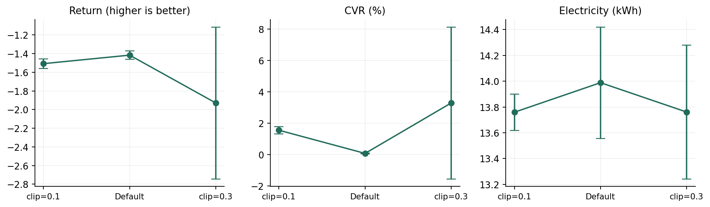
clip=0.1/0.2/0.3 对回报、越界率和电量的影响。
slides_clipPPT · 第 8 页
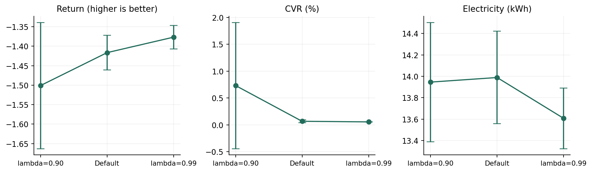
lambda=0.90/0.95/0.99 对回报、越界率和电量的影响。
slides_lambdaPPT · 第 9 页
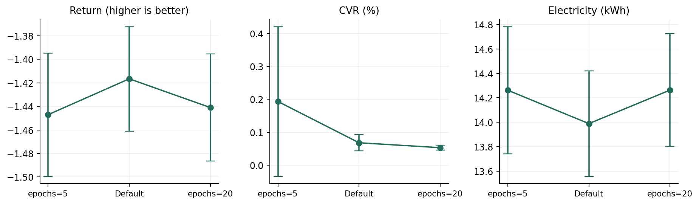
epochs=5/10/20 对回报、越界率和电量的影响。
slides_epochsPPT · 第 10 页
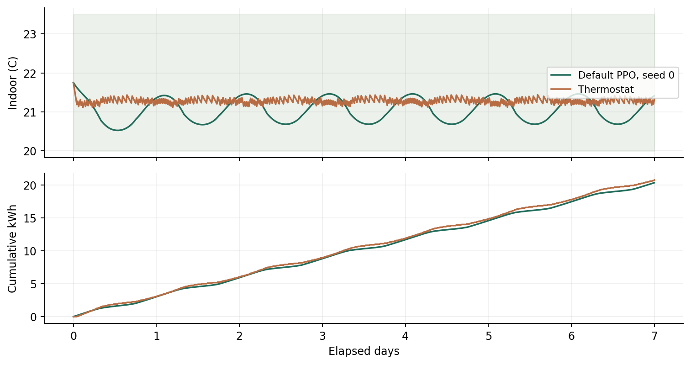
默认 PPO seed 0 与恒温器的室温及累计电量；固定条件 test_cold_00。
slides_cold_trace报告 · 第 6 页
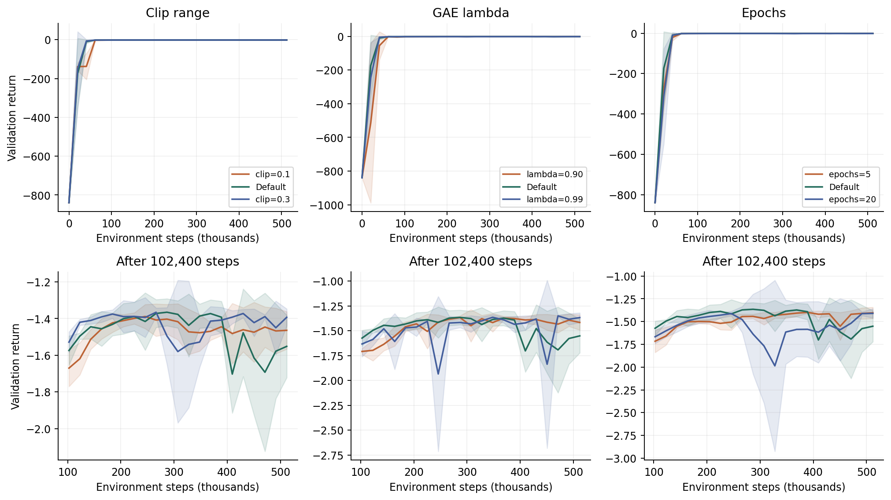
上排展示完整训练，下排放大 102,400 步后的变化；阴影为跨种子标准差。
learning_curves报告 · 第 7 页
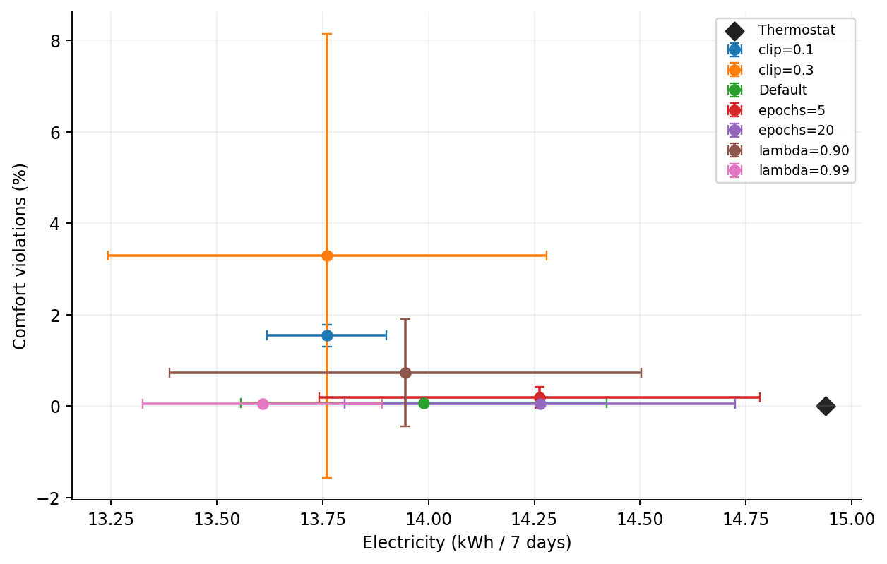
横轴为七天电量，纵轴为越界率；含恒温器参考，未画关闭空调。
comfort_energy_tradeoff报告 · 第 8 页
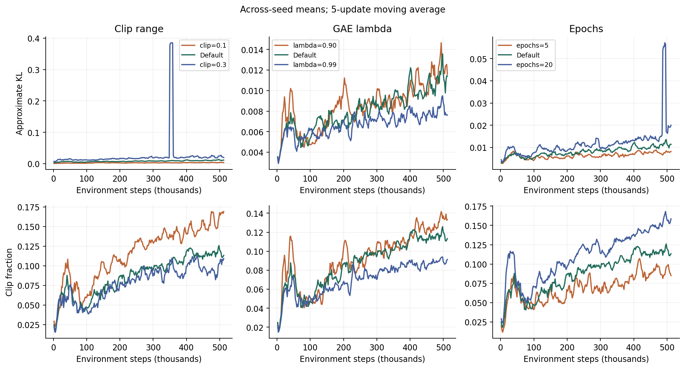
近似 KL 与裁剪比例；跨种子均值后进行五次更新移动平均。
update_diagnostics报告 · 第 9 页
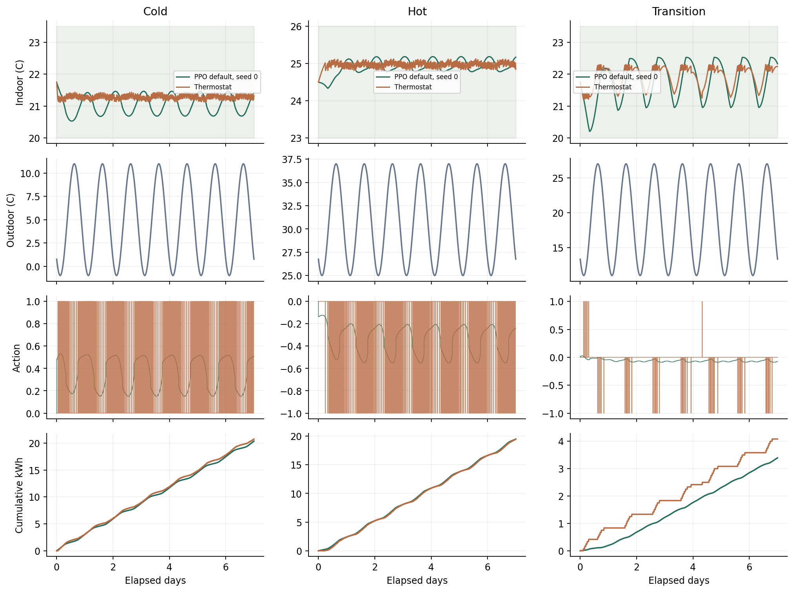
室温、外温、动作与累计电量；默认 PPO seed 0 和恒温器使用相同条件。
representative_trajectories补充 · 中文解读
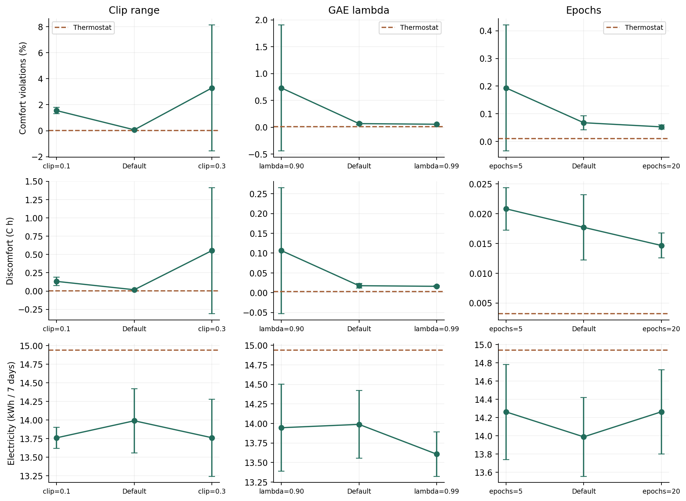
三个参数分别比较 CVR、越界度时和电量；可用于拆分或扩展结果页。
test_metrics补充 · 中文解读
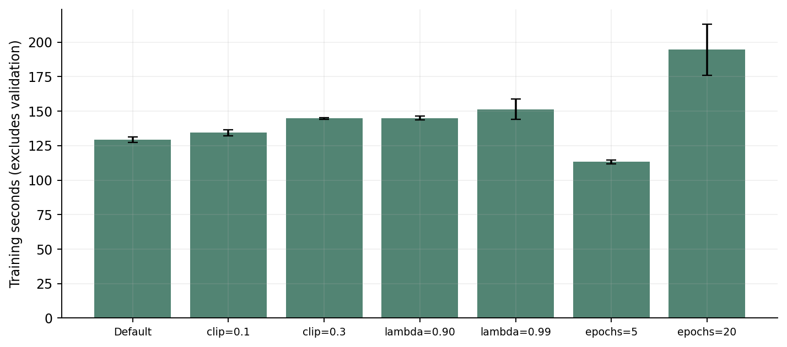
训练墙钟时间扣除周期评价；误差条为跨种子标准差。
runtime